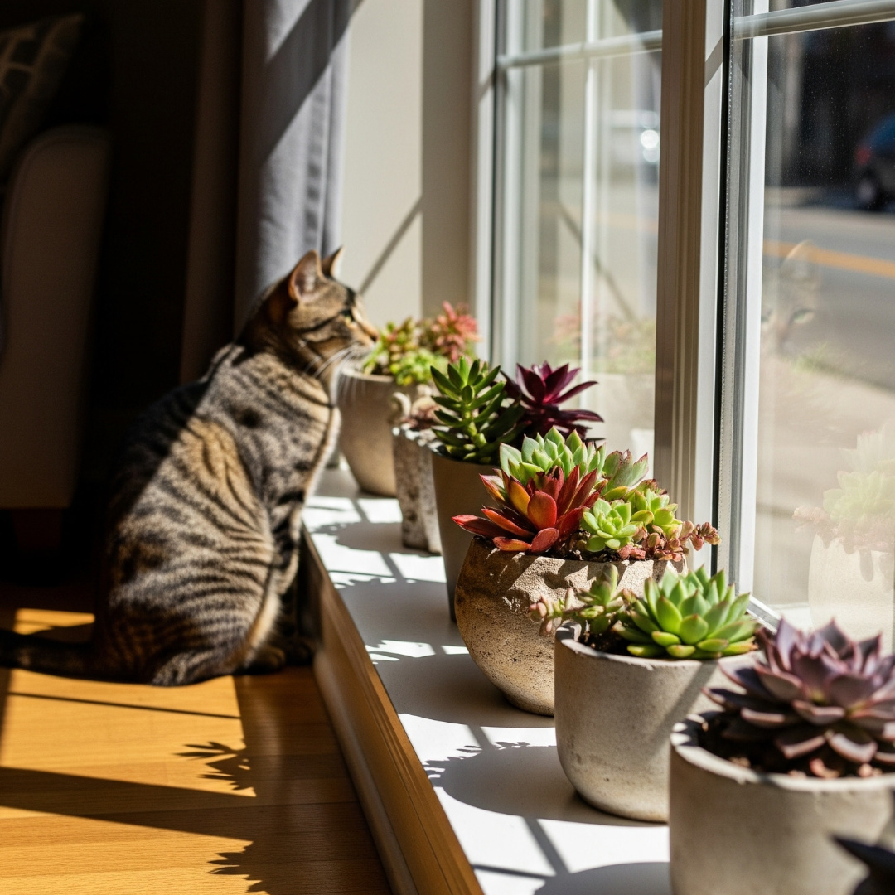

Tipos de Luz para Plantas: Direta, Indireta e Meia-Sombra

Assim como nós precisamos do ambiente certo para viver bem, as plantas também. Entender a diferença entre luz direta, luz indireta e meia-sombra é essencial para o crescimento saudável, a cor das folhas e a floração — e, claro, para manter um lar bonito e seguro para os seus gatos. Ao longo deste guia você verá como identificar cada tipo de luz e como ajustar a luminosidade do seu espaço.
Luz Direta
O que é: É a luz solar plena que incide diretamente sobre as folhas, sem barreiras. Normalmente encontrada em varandas abertas ou janelas voltadas para norte ou oeste (no hemisfério sul).
Plantas indicadas: Cactos, suculentas, alecrim e lavanda.
Cuidados: Luz direta pode queimar folhas delicadas. Se notar manchas marrons ou bordas secas, filtre a luz.
Como ajustar a luz direta
- Cortinas leves ou voal: Filtram parte da radiação mantendo luminosidade alta.
- Telas de sombreamento 30% a 50%: Ideais para varandas ou estufas, suavizando o calor excessivo.
- Vidro fosco ou películas UV: Reduzem a intensidade sem escurecer completamente o ambiente.
Luz Indireta Brilhante
O que é: Luz abundante, porém filtrada por vidro, cortinas ou reflexos. É a mais indicada para a maioria das plantas de interior.
Plantas indicadas: Costela-de-Adão, calateias, samambaias e lírio da paz.
Teste simples: Se a sombra da mão for nítida, mas com bordas suaves, você está em luz indireta brilhante.
Como intensificar a luz indireta
- Espelhos e paredes claras: Refletem e espalham a luz pelo cômodo.
- Telhas translúcidas (policarbonato leitoso): Permitem entrada de luz suave em varandas cobertas.
- Painéis de vidro canelado: Espalham luz sem criar pontos de calor direto.
Meia-Sombra (Luz Filtrada)
O que é: Luz suave, típica de áreas parcialmente protegidas por árvores, muros ou coberturas. Muito comum em halls e varandas cobertas.
Plantas indicadas: Zamioculca, pacová, marantas e peperômias.
Teste simples: Se a sombra da sua mão quase desaparece, mas ainda forma um contorno leve, o ambiente tende a ser de meia-sombra.
Como criar meia-sombra
- Telas de sombreamento 50% a 70%: Protegem espécies tropicais que não toleram sol pleno.
- Biombos de madeira ripada: Criam um sombreamento móvel e decorativo.
- Plantas “escudo”: Use espécies resistentes ao sol para proteger as mais delicadas atrás delas.
Sombra (Luz Baixa)
O que é: Ambientes com pouca ou nenhuma luz natural, como corredores ou banheiros sem janelas.
Plantas tolerantes: Aspidistra, aglaonema e zamioculca (mesmo que cresçam mais devagar).
Dica: Em luz baixa, a maioria das plantas não prospera. Prefira espécies reconhecidamente tolerantes e, se possível, complemente com iluminação artificial.
Como compensar luz baixa
- Fitolâmpadas LED: Fornecem espectro completo para suprir a falta de luz natural.
- Painéis reflexivos: Direcionam a pouca luz existente para a planta.
- Decoração clara: Paredes e móveis brancos ajudam a espalhar a luminosidade disponível.
Telas de Sombreamento: Tipos e Percentuais
As telas de sombreamento são muito usadas em varandas e estufas para regular a intensidade de luz e proteger as plantas do excesso de calor. Elas são classificadas por percentual de bloqueio:
- 30% a 50%: Reduzem a luz, ideais para cactos jovens ou orquídeas que precisam de proteção leve.
- 60% a 70%: Perfeitas para plantas tropicais como calateias e marantas.
- 80% ou mais: Usadas para mudas novas ou ambientes muito quentes.
Cores: Telas pretas reduzem luz e calor de forma uniforme; verdes se integram melhor visualmente em jardins; brancas refletem calor e mantêm o ambiente claro e fresco.
Teste da Sombra da Mão
Uma maneira simples de avaliar a intensidade da luz é observar a sombra da sua mão:
- Sombra nítida e escura: Luz direta
- Sombra nítida e suave: Luz indireta brilhante
- Sombra pouco definida: Meia-sombra
- Sem sombra: Luz baixa ou sombra total
Checklist Rápido
- Observe a luz por um dia e use o teste da sombra da mão.
- Adeque as espécies ao ambiente (direta, indireta, meia-sombra ou sombra).
- Ajuste a intensidade com cortinas, telas, espelhos ou fitolâmpadas.
- Segurança dos gatos: confirme se a espécie é não tóxica antes de levar para casa.
Produtos indicados

Tela de Sombreamento MOS para Orquidário
Tela resistente ideal para sombreamento de orquidários e proteção de plantas delicadas contra sol intenso.
Comprar
Sombrite para Horta 50% (4x10m)
Perfeito para hortas e jardins, oferece 50% de sombreamento e protege contra calor excessivo e radiação solar direta.
Comprar
Tela Sombrite para Horta
Protege plantas sensíveis, reduzindo a intensidade do sol e mantendo condições ideais de crescimento.
Comprar
Luxímetro Portátil (0Fc-20KFc)
Mede com precisão a intensidade da luz, ideal para ajustar posicionamento de plantas e garantir crescimento saudável.
Comprar
Perlita Expandida para Substrato
Melhora a aeração e drenagem do substrato, essencial para diversas plantas de interior.
Comprar
Casca de Pinus para Substrato
Substrato natural e decorativo, ideal para orquídeas e outras plantas epífitas.
Comprar